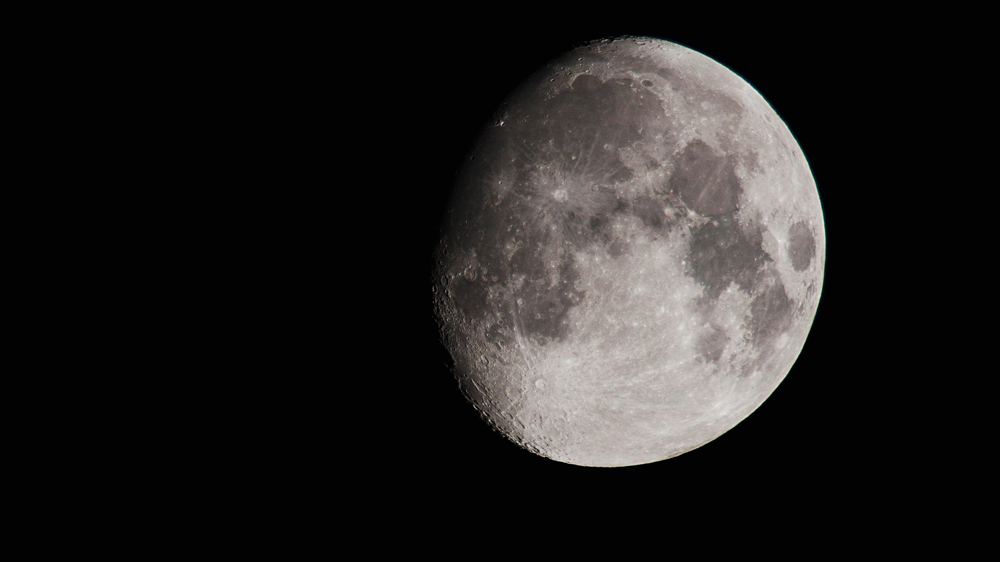

This page is all about me and lets explore the things i love and all of my hubby.
Coffee, that aromatic elixir, has woven itself into the fabric of our lives.
Whether its the comforting morning ritual or the midday pick-me-up, coffee
transcends mere beverage status. Its origins trace back centuries, from the
Ethiopian highlands to bustling European cafes. The rich, earthy aroma of
freshly brewed coffee tantalizes the senses, promising warmth and alertness.
From the robust espresso shots that fuel our workdays to the smooth lattes
that invite leisurely conversations, coffee adapts to our moods. Its a social
catalyst, bringing friends together over steaming cups, or a solitary companion
during late-night study sessions. The caffeine buzz jolts our neurons awake,
sparking creativity and focus.
Dancing is a universal form of expression that transcends cultural boundaries,
allowing individuals to communicate emotions, celebrate traditions, and express
creativity through movement. Whether it's the graceful elegance of ballet, the
infectious energy of hip-hop, or the intricate footwork of traditional folk
dances, each style of dance carries its own unique history and significance.
Beyond mere physical movement, dancing fosters connections between individuals
and communities, serving as a social activity that promotes unity and shared experiences.
Moreover, dancing offers numerous physical and mental benefits, promoting cardiovascular
health, flexibility, coordination, and balance. It serves as a form of exercise that not
only strengthens the body but also uplifts the spirit and enhances overall well-being.
Through regular practice, dancers cultivate discipline, focus, and self-confidence, learning
to express themselves authentically and embrace their individuality on and off the dance floor.
Whether as a professional pursuit or a recreational hobby, dancing enriches lives and brings joy
to both performers and spectators alike.
The guitar is a versatile stringed instrument that has captivated musicians and audiences
across genres and cultures for centuries. With its distinctive shape, fretted fingerboard,
and resonant sound, the guitar offers a wide range of expressive possibilities, from gentle
melodies to blistering solos. Its popularity spans musical styles ranging from classical and
folk to rock, blues, and jazz, making it one of the most widely played instruments in the world.
Constructed from wood, metal, and sometimes synthetic materials, guitars come in various shapes
and sizes, including acoustic, electric, and classical models. Each type produces a unique tone
and requires different playing techniques, whether strumming chords, fingerpicking intricate melodies,
or bending notes with a slide. Beyond its musical capabilities, the guitar serves as a symbol of creativity,
passion, and self-expression, inspiring countless individuals to pick up the instrument and embark on their musical journey.
Chemistry is the scientific study of matter, its properties, composition, and interactions at the atomic and
molecular levels. It explores the fundamental building blocks of the universe and seeks to understand the
transformations that occur when substances undergo chemical reactions. From the composition of the air we
breathe to the structure of complex biological molecules, chemistry provides insights into the workings of
the natural world and underpins many other scientific disciplines.
Central to chemistry is the periodic table of elements, which organizes the known elements based on their
atomic structure and chemical properties. Chemists employ a variety of techniques and methodologies, including
spectroscopy, chromatography, and molecular modeling, to analyze and manipulate substances for practical applications
in fields such as medicine, agriculture, materials science, and environmental protection. By unraveling the mysteries
of matter and energy, chemistry enables us to develop new materials, discover life-saving drugs, and address global
challenges, shaping the way we understand and interact with the world around us.

The moon is Earth's only natural satellite, a celestial body that orbits around our planet in a regular and
predictable manner. It plays a crucial role in stabilizing Earth's rotation and tides, exerting gravitational
forces that influence oceanic currents and the rhythm of life on our planet. From ancient times, the moon has
captured the human imagination, inspiring myths, legends, and cultural practices across civilizations.
Composed of rocky material and covered in craters, mountains, and plains, the moon's surface reflects sunlight,
creating the familiar phases we observe from Earth. Its cycles, from the waxing and waning crescents to the full
moon's luminous glow, have been used to mark time, guide navigation, and symbolize renewal and transformation.
Moreover, the exploration of the moon has been a milestone in human achievement, with missions such as the Apollo
program providing valuable scientific insights into lunar geology, history, and potential for future exploration
and colonization.
Hardware refers to the physical components of a computer system, including the central processing unit (CPU), memory
modules, storage devices, input/output peripherals, and other tangible parts. These components work together to process
data, execute instructions, store information, and facilitate communication between the user and the computer. From the
motherboard that houses the CPU and connects all the other components to the monitor, keyboard, mouse, and printer,
hardware forms the backbone of computing devices, enabling them to perform a wide range of tasks.
The design and functionality of hardware components vary depending on their intended use and technological advancements.
Advances in hardware technology have led to improvements in processing speed, storage capacity, and overall performance,
making computers more powerful, efficient, and versatile. From desktop computers and laptops to smartphones, tablets, and
wearable devices, hardware innovation continues to drive progress in computing, enabling users to stay connected, productive,
and entertained in an increasingly digital world.
Travel is the act of moving from one place to another, typically for purposes of exploration, leisure, business, or cultural exchange.
It involves experiencing new environments, cultures, cuisines, and landscapes, broadening one's horizons and creating lasting memories.
Whether embarking on a solo adventure, a family vacation, or a group tour, travel offers opportunities for personal growth, self-discovery,
and connection with others.
The motivations for travel are as diverse as the destinations themselves, ranging from seeking relaxation on a tropical beach to
embarking on an adventurous trek through remote wilderness. Travel fosters a sense of curiosity and wonder, inspiring individuals
to step outside their comfort zones, embrace new experiences, and gain a deeper understanding of the world and its inhabitants. Additionally,
travel contributes to economic growth, cultural exchange, and global cooperation, bridging distances and fostering mutual respect and appreciation across borders.